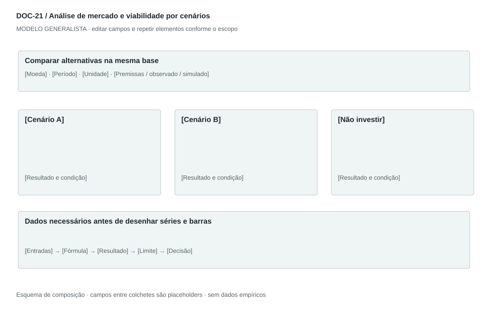

DOC-21 / Biblioteca documental generalista
Análise de mercado e viabilidade por cenários
Apoiar uma decisão de entrada, investimento ou expansão com hipóteses explícitas, alternativas e limites.
Modelo de investigação. Não representa uma análise concluída. Campos vazios devem permanecer identificados; não inventar dados para completar figuras.
Estrutura editorial
Relatório executivo de 8–15 páginas conforme evidência, resumo de uma página e anexos técnicos. Preservar narrativa decisória e tabelas comparativas; gráficos são extensões recomendadas, não conteúdo visual observado no original.
Visual previsto

Barras categóricas para alternativas e mesma unidade por gráfico; linha apenas para caixa em períodos reais. Painel de sensibilidade usa variações declaradas. Sem entradas, mostrar tabela de lacunas, não dados fabricados.
Imagens: Gráficos analíticos e tabelas de equivalência; mapa só com dados geográficos fornecidos e fonte. Fotografias não sustentam viabilidade nem provam demanda.
Dicionário de dados
| Campo | Tipo | Dado necessário |
|---|
| cenario_id | referencia | Alternativa independente, não período temporal |
| territorio | texto | Área analisada |
| data_base | data | Data do retrato usado |
| horizonte | texto | Período de planejamento |
| escala | decimal | Quantidade em unidade declarada |
| preco | decimal | Preço por unidade, null quando indefinido |
| volume | decimal | Unidades por período, sem confundir com receita |
| receita | decimal | Derivada da regra de cobrança, na moeda e período definidos |
| custo_variavel | decimal | Custo atribuível ao volume |
| custo_fixo | decimal | Custo por período independente do volume dentro da faixa |
| investimento | decimal | Desembolso inicial e reposições, separado de despesa |
| caixa | decimal | Saldo reconciliado por período |
| metrica_decisao | texto | Indicador, limiar e condição de avanço |
| limitacao | texto | Lacuna que pode alterar a decisão |
Todos os registros precisam de classificação, fonte, localização, datas, confiança e limitação. Números também precisam de unidade, moeda quando aplicável e período.
Modelo preenchível
Os quadros amarelos podem ser editados nesta página para impressão. Edições não são gravadas automaticamente: use o Markdown/JSON para manter uma versão ou imprima em PDF após editar.
[Negócio] · [Versão] · [Data-base] · [Autor] · [Audiência] · [Território]
Pergunta decisória: [A preencher]
Escopo: [A preencher]
1. Pergunta e convenção de evidência
Defina decisão, audiência, território, data-base e distinção entre observado, hipótese, inferência e simulação.
[Análise + evidência + implicação + lacuna]
2. Resumo executivo
Recomendação condicional, razão, principais riscos e próximo teste.
[Análise + evidência + implicação + lacuna]
3. Oferta e adaptação
Descreva o que muda em cada mercado ou segmento e por quê.
[Análise + evidência + implicação + lacuna]
4. Mercado e alternativas
Demanda, substitutos, canais, fontes, recência e cobertura.
[Análise + evidência + implicação + lacuna]
5. Condições operacionais e requisitos
Capacidade, fornecedores, pessoas, dependências e verificações profissionais pertinentes.
[Análise + evidência + implicação + lacuna]
6. Cenários de parceiros e escala
Compare alternativas viáveis, incluindo não investir, com premissas equivalentes.
[Análise + evidência + implicação + lacuna]
7. Capital e retorno
Usos, capital de giro, caixa por período, horizonte e definição do retorno.
[Análise + evidência + implicação + lacuna]
8. Modelo e sensibilidade
Receita, custos, contribuição, caixa e variáveis dominantes. Não chamar cálculo determinístico de previsão validada.
[Análise + evidência + implicação + lacuna]
9. Riscos e condições de reversão
O que pode invalidar a conclusão e sinais a monitorar.
[Análise + evidência + implicação + lacuna]
10. Decisão e experimento
Escolha, condições, responsável, prazo, orçamento, métrica, limiar e regra de parada.
[Análise + evidência + implicação + lacuna]
11. Fontes e anexo reproduzível
Referências datadas, fórmulas, entradas, lacunas e resultados reconciliados.
[Análise + evidência + implicação + lacuna]
Decisão e próximo passo
[Decisão e justificativa]
[Alternativa considerada]
[Condição de reversão]
[Ação, responsável, prazo e critério]
Fontes e limites
[Fonte + localização + datas + o que sustenta + limitações]
Critérios de revisão
- Premissa somada ou multiplicada produz estimativa, não fato observado.
- Faturamento, GMV, receita líquida, contribuição, lucro e caixa são definidos separadamente.
- Não concluir tamanho amostral suficiente apenas pela quantidade de pontos ou agentes.
- Retorno tem horizonte, desembolsos, impostos aplicáveis e fórmula; lacunas ficam visíveis.
Estudo do arquivo original
DOC-21-fonte.md — Markdown extenso, datado, com convenção Fato observado/Inferência/Premissa de cenário, resumo executivo, nove seções numeradas e fontes. Compara parceiros, escalas, capital, horizontes e economia unitária por tabelas e narrativa. Não contém gráficos ou imagens embutidos. Algumas conclusões chamadas de fatos derivam de premissas; o modelo reforça essa distinção.
Observação do original e adaptação recomendada são camadas distintas. Nomes, preços, localidades, contatos e conclusões do caso-fonte não devem preencher a nova análise.